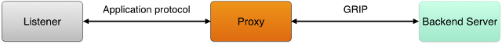

The Generic Realtime Intermediary Protocol (“GRIP”) makes it possible for a web service to delegate realtime push behavior to a proxy component. Listening entities, such as long-lived HTTP or WebSocket connections, are managed by the proxy. The web service backend can instruct the proxy to associate listeners with publish-subscribe channels. The web service backend may publish data to channels, and the proxy will relay the data to all associated listeners. When data is published, the entirety of the transmission is specified, allowing complete control over the application protocol exposed to listeners.

There are many advantages to this approach:
Reusability. The primary goal of GRIP is to isolate the common aspects of realtime push functionality into a reusable proxy component. A GRIP proxy should be able to power any kind of web service, with any kind of API contract, for any kind of application, running at any organization. Adding new endpoints, changing protocol flows, or using different data formats should be possible without modifying the proxy.
Simplified routing. Knowing if or where a listening entity may be connected in a cluster makes for a tricky routing problem. It’s simpler for data sources to publish data to channels rather than to individual listeners. With GRIP, data can be sent to a sole proxy, or to each proxy instance in a cluster (either directly or optionally via a message queue), without having to know whether or not any listeners are present.
High scalability. Many listeners may be associated with a single channel. This means data can be sent to the proxy once and multicasted to a set of listeners. Proxies can be chained to message brokers to form a multi-tiered architecture capable of massive output (e.g. publishing to a million connections at the same time across a set of proxies).
Stateless development. In the case of long-lived HTTP connections such as long-polling or streaming, a GRIP proxy communicates to a backend server using short-lived HTTP requests. This means the backend doesn’t have to maintain long-lived connections and it can generally operate statelessly; it can handle incoming requests statelessly and publish data to the proxy statelessly. In the case of WebSockets, a proxy and backend may optionally choose to communicate statelessly on the backend side (e.g. via HTTP).
There are two main transports defined: HTTP and WebSocket.
The HTTP GRIP transport allows a proxy to hold open HTTP requests on behalf of a backend web service, facilitating realtime data push over those held requests. There are two hold modes: response and stream.
When a request is made to the proxy, the proxy forwards it to a backend server. The proxy may include special headers. The following request headers are defined:
Grip-Sig: A JSON Web Token signed with a key known between the proxy and the backend server. The backend can look for this header if it needs to know whether or not a request came from a known GRIP proxy. The JWT claim SHOULD contain an iss field as a hint for which key is being used (in case there are multiple possible keys). The JWT claim MUST contain an exp field. If the token cannot be fully verified for any reason, including expiration, then the backend should behave as if the header wasn’t present.When the backend responds to the request, it MAY specify instructions to the proxy about how to behave, such as the hold mode to use and any channels that should be associated with the request. Once the backend has responded, the transaction between the proxy and the backend is complete. However, the request between the client and the proxy remains open according to the instructions provided.
Instructions are provided via headers. The following response headers are defined:
Grip-Hold: The hold mode, either response or stream. This header MUST be present in order for the proxy to take GRIP-related action, otherwise it should behave normally (e.g. by relaying the response back to the client).Grip-Channel: A channel to subscribe the request to, encoded as UTF-8. The channel can contain any Unicode character that is conveyable over an HTTP header and isn’t ambiguous (beware of whitespace and commas). There are no characters with special meaning. Multiple Grip-Channel headers may be specified in the response, to subscribe multiple channels to the request. At least one Grip-Channel header MUST be present if Grip-Hold is present. This header type may include parameters. The only defined parameter is prev-id, which specifies the ID of data that was last published to the specified channel (used to avoid a race condition). The prev-id parameter is OPTIONAL.Grip-Timeout: The length of time the request should be held open before timing out. This header is OPTIONAL and only applies to the response mode. If omitted, the proxy SHOULD use a default of 55 seconds.Grip-Keep-Alive: Data to be sent to the client after a certain amount of activity passes. This header is OPTIONAL and only applies to the stream mode. This header type may include optional parameters. Defined parameters are timeout and format. The timeout parameter specifies the length of time a request must be idle before the keep alive data is sent. If omitted, the proxy SHOULD use a default of 55 seconds. The format parameter specifies the format of the keep alive data. Allowed values are raw, cstring, and base64. If omitted, raw is assumed. For example, if a newline character should be sent to the client after 20 seconds of inactivity, the following header could be used: Grip-Keep-Alive: \n; format=cstring; timeout=20.To publish data to any held open connections, http-response and/or http-stream payloads must be transmitted to the proxy using the Control Service. Examples:
"http-response": {
"code": int,
"status", str,
"headers": {
name: str,
...
},
"body": str,
"body-bin": base64 str
}
"http-stream": {
"content": str,
"content-bin": base64 str
}
The WebSocket GRIP transport allows a proxy to associate channels with WebSocket connections, so that data may be published to these connections.
When a client makes a WebSocket connection to the proxy, the proxy makes a WebSocket connection to the backend server. In this connection request, the proxy includes the grip extension in the Sec-WebSocket-Extensions header. The proxy SHOULD also include a Grip-Sig header as described in the HTTP section:
GET /websocket/path/ HTTP/1.1
Host: example.com
Upgrade: websocket
Connection: Upgrade
Grip-Sig: [... JWT ...]
Sec-WebSocket-Version: 13
Sec-WebSocket-Key: dGhlIHNhbXBsZSBub25jZQ=
Sec-WebSocket-Extensions: grip
...
The backend server then accepts the connection with the proxy by responding with status code 101. In order to enable GRIP functionality, the backend must include the grip extension in its response. If the backend does not include this extension, then the proxy MUST assume that the backend server is not GRIP capable and treat the session as a passthrough.
If the backend server provides the grip extension, then the proxy will know that the backend is GRIP capable and the backend may send special control messages to the proxy. In order to disambiguate control messages from normal messages, the backend denotes the type of message by including a prefix in the payload of the message. If the message spans multiple frames, then the prefix would be included in the first frame only. By default, the prefix for normal messages is m: and the prefix for control messages is c:. The proxy MUST strip off the prefix before relaying or processing.
The grip extension has an optional parameter called message-prefix that the backend server can use to override the prefix for normal messages. The backend can even specify a blank string for this value, to indicate that there should be no prefix at all. This can be useful if the backend speaks entirely in JSON, in which case there is no chance of conflict with control messages (a JSON payload would never begin with c:). For example:
HTTP/1.1 101 Switching Protocols
Upgrade: websocket
Connection: Upgrade
Sec-WebSocket-Accept: s3pPLMBiTxaQ9kYGzzhZRbK+xOo=
Sec-WebSocket-Extensions: grip; message-prefix=""
...
Control messages are JSON format, encoded as an object with a type field indicating the type of control message. All other fields in the object are specific to the control message type. The following control messages are defined:
{ "type": "subscribe", "channel": "{channel}" }{ "type": "unsubscribe", "channel": "{channel}" }{ "type": "detach" }Note that control messages are only ever sent by the backend server to the proxy. The proxy does not send control messages to the backend, and the client has no awareness of GRIP. The backend uses the subscribe and unsubscribe messages to control the GRIP channels that the client’s WebSocket connection is subscribed to. A channel can contain any Unicode character and there are no characters with special meaning.
The detach message is used to disconnect the backend from the proxy without the proxy disconnecting from the client. Once a connection is detached, any further messages the proxy receives from the client are dropped. Detached mode only makes sense if the connection has been subscribed to at least one channel and the client is not expected to send anything further. This is useful if the connection is used only for one-way transmission.
The backend server may publish data to the proxy using the ws-message format, transmitted to the proxy using the Control Service. Example:
"ws-message": {
"content": str,
"content-bin": base64 str
}
This format contains just one child field, content or content-bin, containing an entire message to be relayed to all clients subscribed to the channel being published to. The content field is a string containing a text message. The content-bin field is a string containing a binary message encoded in Base64.
A GRIP proxy may be controlled via the Extensible Pubsub Control Protocol (EPCP). GRIP requires support for the publish endpoint, which is used to send items over HTTP or WebSocket connections that have been bound to channels.
EPCP defines a generalized and extensible way of publishing data through a publish-subscribe service using HTTP. A pubsub service offering an EPCP interface must make a REST API available at a known base URI. For example, if the base URI of the EPCP service is http://localhost:9000/epcp, then method endpoints would be appended onto that. For example, the publish endpoint would be available at http://localhost:9000/epcp/publish/.
For example, a publish request may look like this:
POST /publish/ HTTP/1.1
Host: localhost:5561
Content-Type: application/json
{
"items": [
{
"channel": str,
"id": str,
"prev-id": str,
"formats": {
format_1: {},
format_2: {},
...
},
...
},
...
]
}
More than one item may be published in a single request. Each item may contain one or more formats by providing field names for each format along with their values. Item formats may be specified in further specifications. EPCP alone does not define any item formats. GRIP defines the following item formats: http-response (see HTTP), http-stream (see HTTP, and ws-message (see WebSocket).